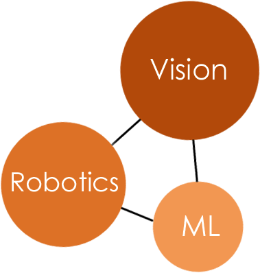

<html>
<head>
	<title>Colin Lea</title>
	<link rel="stylesheet" href="style.css" type="text/css">

	<script type="text/javascript">
    var _gaq = _gaq || [];
    _gaq.push(['_setAccount', 'UA-15462704-4']);
    _gaq.push(['_trackPageview']);

    (function() {
      var ga = document.createElement('script'); ga.type = 'text/javascript'; ga.async = true;
      ga.src = ('https:' == document.location.protocol ? 'https://ssl' : 'http://www') + '.google-analytics.com/ga.js';
      var s = document.getElementsByTagName('script')[0]; s.parentNode.insertBefore(ga, s);
    })();
    </script>
</html>

<!-- - - - - - - - - - - - - - - - - HEADER  - - - - - - - - - - - - - - - - -->
<html>
    <header>
        <br><br><br>
        <!-- <h1> Colin Lea</h1> -->
        <!-- <h1 align="center">Colin Lea</h1> -->

<!--         <div id="Title" align="left">
            <b>Colin Lea</b>
            
        </div>
 -->        

        <table align="center" cellpadding=20%><tr>
        <td align="left" white-space="nowrap" overflow="hidden">
            <div id="Title" align="left">
                <b>Colin Lea</b>
            </div>
        </td>
        <td align="right" white-space="nowrap" overflow="hidden">
            
        </td>
        </tr></table>
        <br>
    </header>

        <ul class="centered" align="center">
        <!-- <ul> -->
        <!-- <ul align="center"> -->
            <li class="header"><a id="nav" href="index.html">home</a></li>
            <li class="header"><a id="nav" href="projects.html">projects</a></li>
            <li class="header"><a id="nav" href="documents.html">documents</a></li>
            <li class="header"><a id="nav" href="https://github.com/colincsl">code</a></li>
            <li class="header"><a id="nav" href="http://colinlea.wordpress.com">blog</a></li>
        </ul>

        <!-- hi -->
        
        <!-- </nav> -->
    <!-- </header> -->

<!-- - - - - - - - - - - - - - - - - /HEADER  - - - - - - - - - - - - - - - - -->

<body>

    <center>
    <div id="bio">
    <h3>
    
    Colin is a PhD student in Computer Science at Johns Hopkins University.
    His interests are at the intersection of robotics, computer vision, and machine learning with emphasis on real-time applications. His current work focuses on extracting useful high-level information from 3D data, particularly for uses in areas such as activity recognition. At Hopkins, Colin is part of the <a href="http://lcsr.jhu.edu">Laboratory for Computational Sensing and Robotics</a> working with Russell Taylor, Gregory Hager, and others. He recently spent the summer working with the workflow analysis group at <a href="http://campar.in.tum.de/">CAMP</a> in the Technical University at Munich.
    </h3>

    <h3>
    He has an undergraduate degree in mechanical engineering from University at Buffalo where his work ranged from mechanical design, such as in the development of a low cost five degree of freedom haptic device, to novel image recognition systems for the Intelligent Ground Vehicle Competition. Colin worked in several labs at Buffalo including the <a href="http://mechatronics.eng.buffalo.edu/">Automation, Robotics, and Mechatronics Lab</a>, <a href="http://www.eng.buffalo.edu/ubr/">Undergraduate Robotics Club</a>, <a href="http://www.cse.buffalo.edu/~jcorso">Vision and Perceptual Machines Lab</a>, as well as at Carnegie Mellon in the <a href="http://www.frc.ri.cmu.edu/project/subterranean/">Subterranean Robotics</a> group.  
    </h3>
    </div>
    <br><br><br>
    Updated 27 August 2012.
    </center>


</body>
</html>
